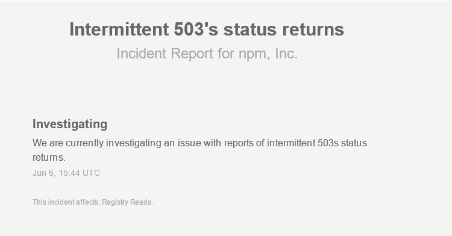

npm install jquery
npm install react react-dom
npm install --save-dev autoprefixer
npm install --save-dev grunt
npm install --save-dev node-sass
npm install --save-dev prettier
npm install --save-dev stylelint
{
// ...
"devDependencies": {
"autoprefixer": "^7.2.5",
"grunt": "^1.0.1",
"node-sass": "^4.7.2",
"prettier": "1.8.2",
"stylelint": "^8.4.0"
},
"dependencies": {
"jquery": "^3.2.0"
"react": "^16.2.0",
"react-dom": "^16.2.0"
}
}
🛠️ Library aufbohren
"dependencies": {
"@init/brick-bpa-forms": "^1.0.0",
"@init/brick-bpa-matomo": "^1.0.0",
"a11y-dialog": "^4.0.1",
"react-dom": "^16.2.0",
"react-highlight-words": "^0.11.0",
"react-md-spinner": "^0.2.5",
"react-paginate": "^5.1.0",
"react-select": "github:jnachtigall/react-select#b5401e7e90ed5ad0552dd947cde38730df3f8319",
}
https://github.com/jnachtigall/react-select
👷 Eigene wiederverwendbare Komponenten
🚧 Serverausfälle
npm install --global verdaccioverdacciogit initnpm initnpm set registry http://npm.dev.initnpm publish
npm set registry http://npm.dev.init
npm install some-dependency
# after npm init and making changes:
npm version major|minor|patch -m "message"
💻
semver.org